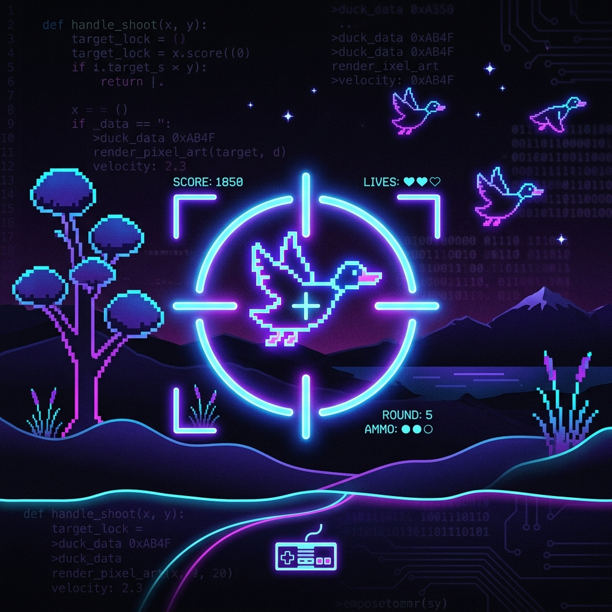
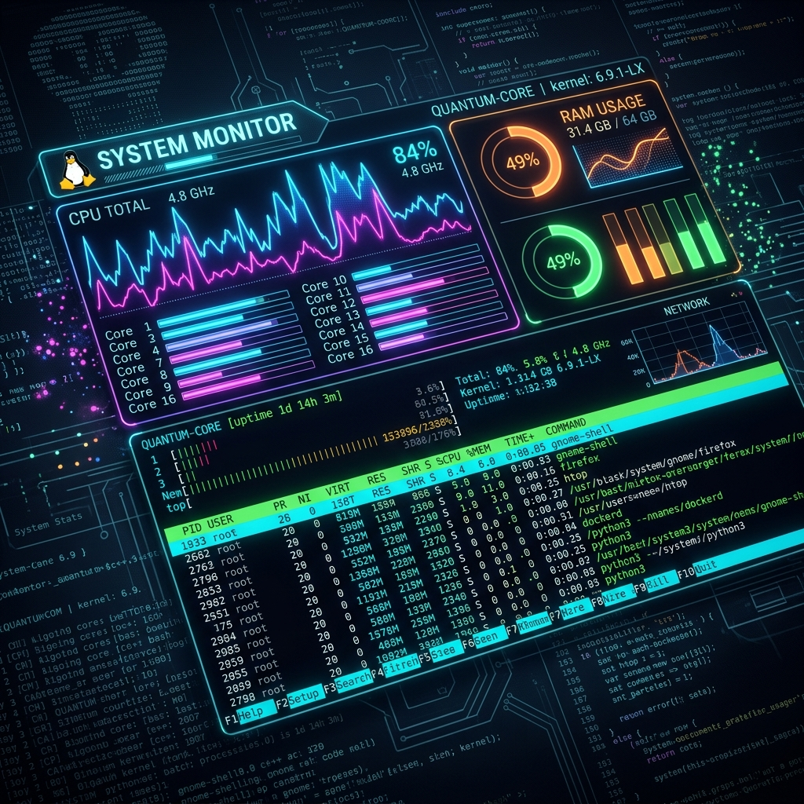
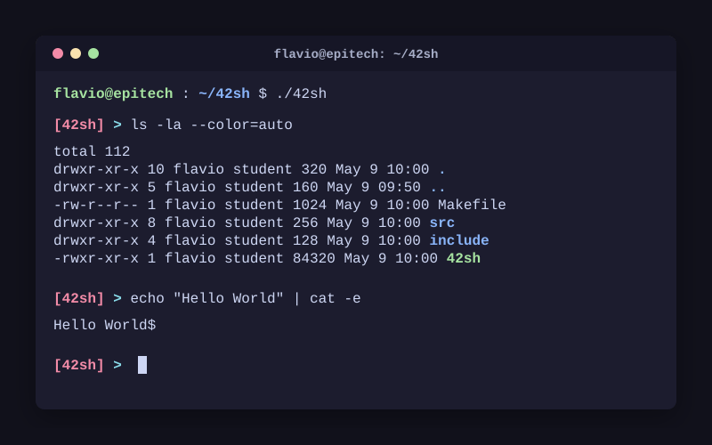
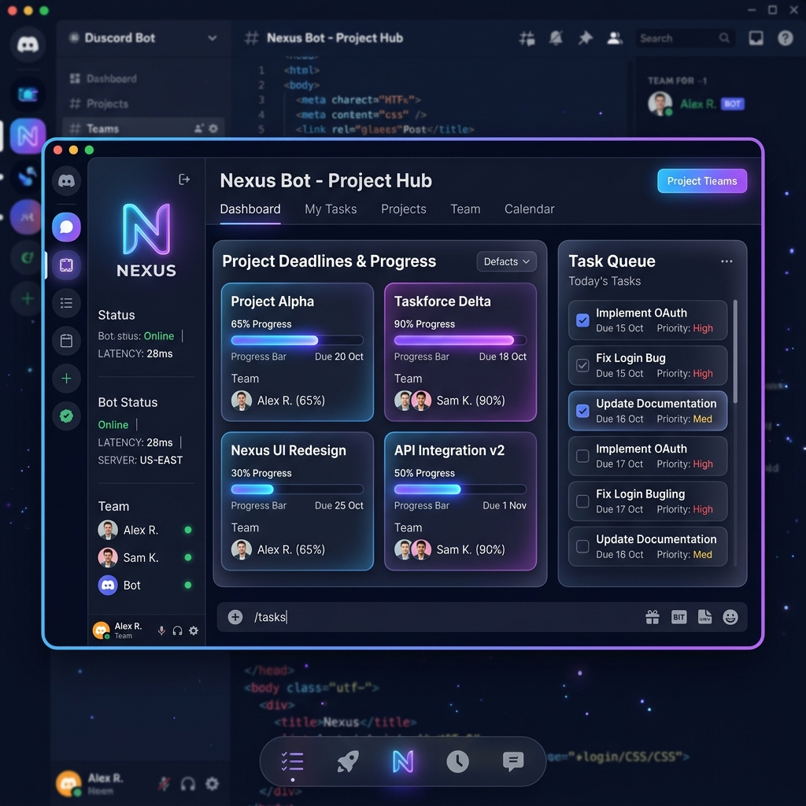

Bonjour, je suis
Flavio KOUGBADI
Étudiant en Informatique @ Epitech Bénin
Passionné par le développement logiciel et les systèmes. Actuellement en 1ère année à Epitech Bénin, je suis à la recherche de nouvelles opportunités de stage pour mettre en pratique mes compétences et relever de nouveaux défis.
01. À propos de moi
Je suis un étudiant dynamique en 1ère année à Epitech Bénin. Mon parcours m'a permis d'acquérir une forte autonomie grâce à la pédagogie par projets (PBL).
J'aime concevoir des architectures logicielles robustes et comprendre comment les choses fonctionnent sous le capot. C'est pourquoi je me concentre particulièrement sur les langages de bas niveau et la programmation système.
1+
Années de code intensif
10+
Projets Epitech validés
02. Mes Compétences
C
Maîtrise approfondie, gestion de la mémoire, pointeurs avancés, et appels systèmes Unix. Certification intermédiaire obtenue.
C++
Programmation orientée objet, STL, templates. Certification débutant obtenue et apprentissage continu.
Python
Scripts d'automatisation, algorithmique et manipulation de données.
Unix / Shell
Scripting bash, maîtrise de l'environnement Linux, Makefile et compilation.
03. Mes Projets

my_hunter
Recréation du célèbre jeu vidéo Duck Hunt. Utilisation de la bibliothèque graphique CSFML pour la gestion des fenêtres, des sprites, des événements et des animations.
my_radar
Simulation 2D d'un système de radar de contrôle aérien avec de nombreux avions et tours de contrôle. Optimisation poussée avec un Quadtree pour gérer efficacement les collisions.

Top
Recodage de la commande système `top` sous Linux. Parsing du dossier `/proc` pour récupérer en temps réel les informations sur les processus et les ressources système.

42sh
Développement d'un interpréteur de commandes Unix (shell) complet de A à Z. Implémentation des pipes, redirections, variables d'environnement et d'un éditeur de ligne avancé.
Data Tardis
Réalisation d'un modèle de prédiction de retards de train. Traitement de données massives et implémentation d'algorithmes d'apprentissage automatique en Python.

Bot Discord Task Manager
Développement d'un bot Discord personnel en Python pour la gestion du temps et l'organisation. Il permet de planifier des journées, de définir les deadlines et l'importance des projets, ainsi que de suivre l'avancée de chaque tâche.
04. Contact
Je suis actuellement à la recherche d'un stage pour consolider mes acquis et apporter ma valeur à votre équipe. N'hésitez pas à me contacter !
Dites Bonjour